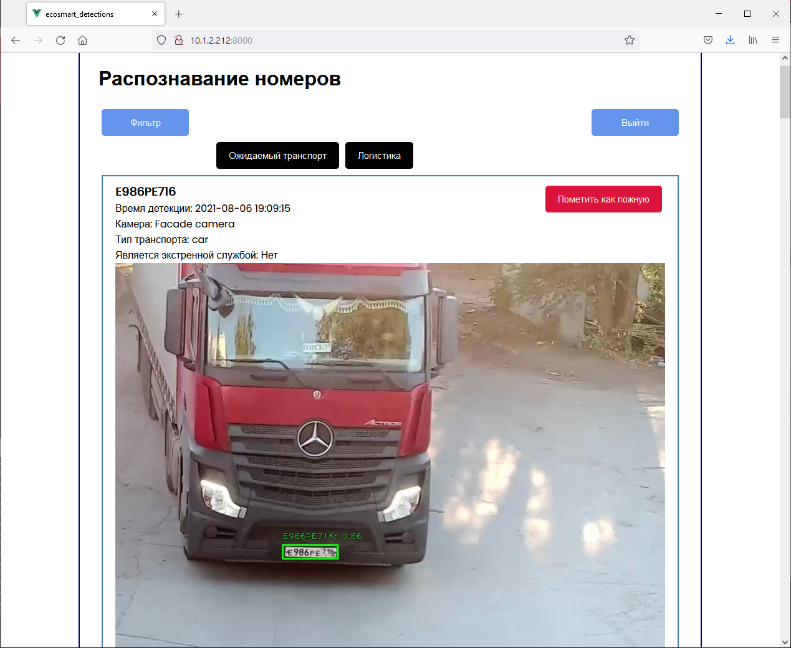
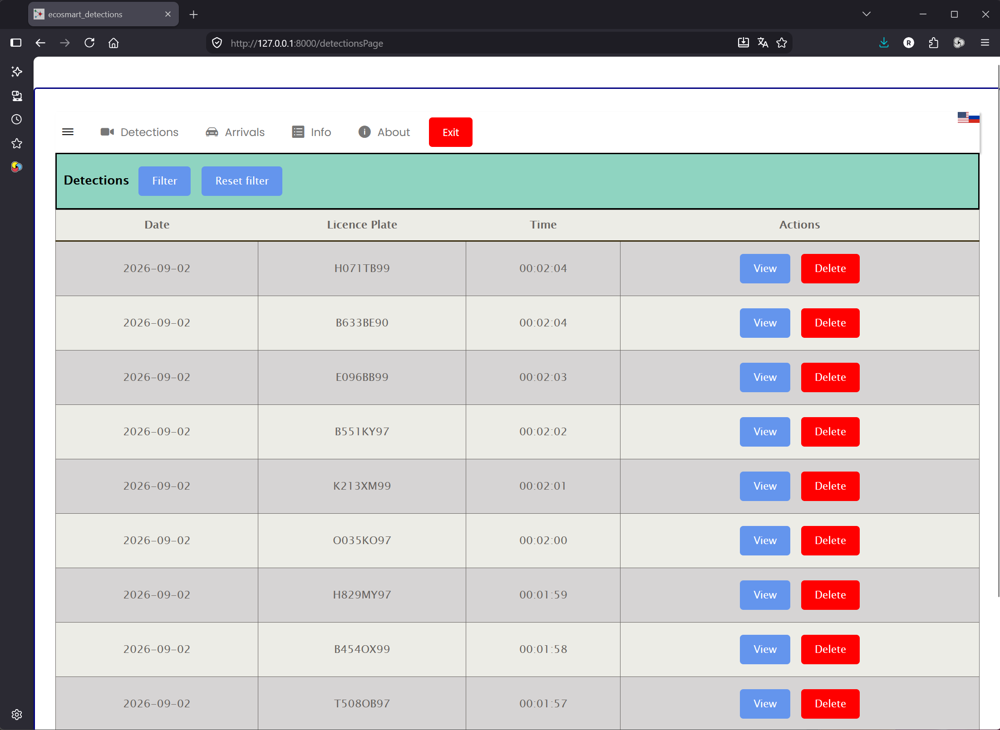
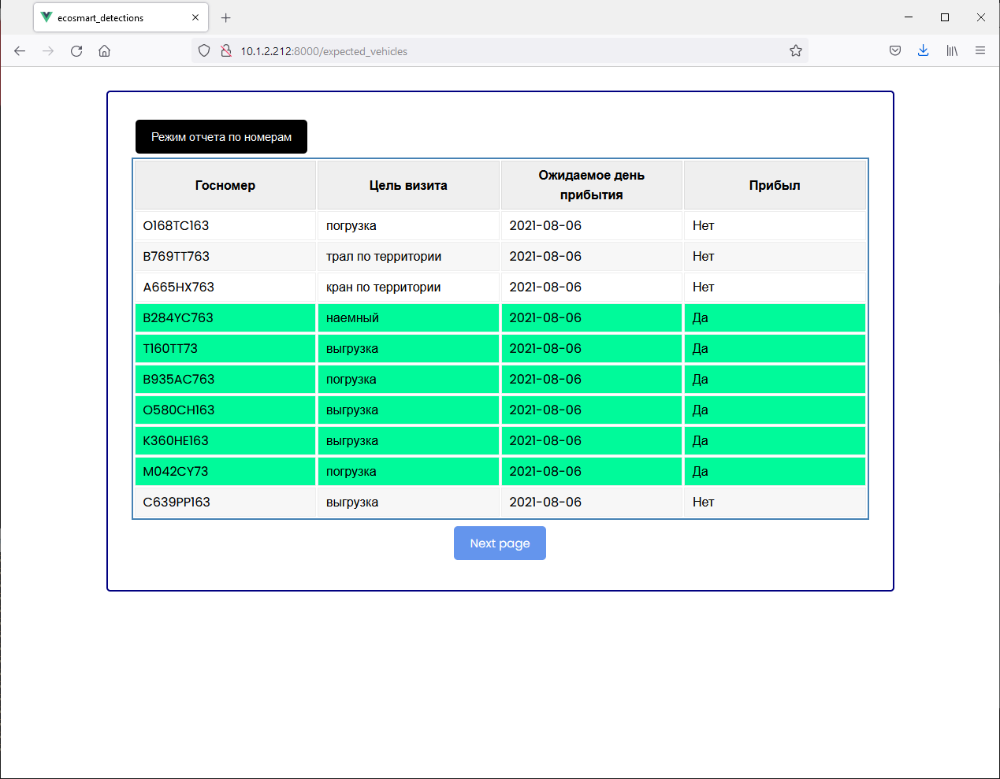

A license-plate-recognition vehicle access-control system built for a real site: cameras feed a
custom neural-network pipeline that detects and reads plates, checks them against a daily whitelist,
optionally triggers a barrier relay, and reports every detection to a backend with a web front end
for operators.
Overview
The system automates vehicle access control at the site's gate. Cameras watch the entrance; a custom
deep-learning pipeline (MTCNN for plate detection, an STN + recognizer net for reading it) picks the
license plate out of each frame and reads it directly off the live feed — no manual lookup.
Every read is checked against a daily list of expected vehicles logistics has scheduled for loading
or unloading; a match can open the barrier automatically, and every detection — matched or not
— is logged for operators to review.

A detected vehicle: the plate is located and read directly off the camera frame, alongside the recognition confidence.

The detections log: every read, filterable, with a view/delete action per row for operator review. The UI also supports switching languages.

The expected-vehicles list operators use to schedule incoming trucks; arrivals are checked against it automatically, and the ones marked as arrived are highlighted.
Highlights
ANPR system design. Designed and built the vehicle automatic number-plate recognition (ANPR) system end to end, on custom deep networks (MTCNN, STR-Net).
MTCNN pipeline optimization. Ran an in-depth analysis of MTCNN and restructured the detection pipeline down to P-Net and O-Net only, dropping R-Net entirely — cutting GPU load with no loss in accuracy.
Dataset & experiment tooling. Customized LabelImg for the company's metadata format, led the annotation team, and built the dataset validation pipeline; set up on-prem data/experiment versioning (MLFlow, DVC).
Business impact. Automatic recognition of expected truck convoys approaching the site, wired into the logistics notification system, eliminated vehicle downtime and sped up unloading.
In production, this automatic recognition of expected vehicles — tied into the logistics
notification system — eliminated vehicle downtime at the gate and sped up unloading, by
removing the manual step of checking each truck against the day's schedule.
(private repository — happy to share access or a demo on request)